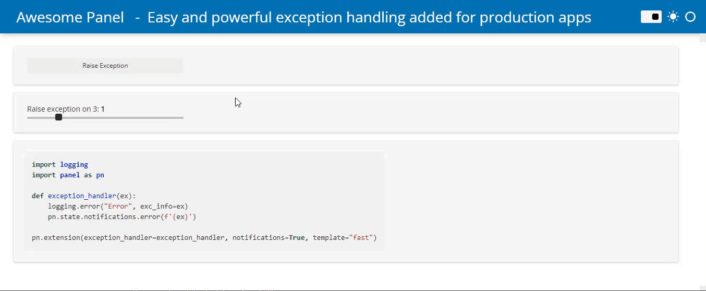

@pn.cache(max_items=10, policy='LRU', ttl=60, to_disk=False)
def load_data(path):
return ... # Load some dataPanel 0.14.0 Release
release
panel
Release announcement for Panel 0.14

What is Panel?
Panel is an open-source library that lets you create custom interactive web apps and dashboards by connecting widgets to plots, images, tables, and text - all while writing only Python!
Panel integrates seamlessly with your existing work:
- Your code: Step into Panel with your existing work :) Continue to use the PyData ecosystem that you already know and love: matplotlib, seaborn, ggplot, bokeh, plotly, altair, echarts, holoviews, dask, datashader, and more!
- Your workflows: Move the same code freely between a Jupyter Notebook (or other interactive prompt), your IDE, and standalone apps running in the browser or on a server. Easily switch between exploring your data, building visualizations, adding custom interactivity, sharing with non-technical users, and back again at any point, using the same tools and code throughout.
Please check out the Panel website to find out more.
New release!
We are very pleased to announce the 0.14 release of Panel! This release focuses on three main themes:
- Support for running Panel entirely in the browser using WebAssembly (via Pyodide and PyScript)
- Quality of life improvements to make it easier to build responsive and performant applications
- Improvements to static typing and docstrings to enhance the developer experience.
You can now easily:
- run your apps and documentation in in the browser. No server required!
- provide error messages to your users via a global exception handler.
- display large tables with a much more robust Tabulator widget.
- build data apps that load faster because
- we now provide the easy to use
pn.cachedecorator.
- we now have our own CDN (https://cdn.holoviz.org/) to serve assets to your data app fast.
- we now provide the easy to use
- find the information you need via improved documentation, docstring and type annotations.
- preview your apps inside Jupyter using custom Jupyter kernels.
Many, many thanks to everyone who filed issues or contributed to this release. In particular we would like to thank @janimo, @xavArtley, @thuydotm, @jmosbacher, @dmarx, 2WoLpH, @ipopa144, @sdc50 and the core team consisting of @philippjfr, @Hoxbro, @maximlt and @MarcSkovMadsen.
If you are using Anaconda, you can get the latest Panel with conda install -c pyviz panel , and using pip you can install it with pip install panel.
Run Panel apps entirely in your browser
Panel lets you write dashboards and other applications in Python that are accessed using a web browser. You typically have to deploy your Panel app to a web server. This introduces some pains
- Deployment of a web server is a separate skill that takes time and is costly
- The communication between the server and browser introduces latency, it takes time to communicate back and forth.
Panel 0.14 flips that on its head. It is now possible to run a large set of Panel Apps directly in the browser, with no separate server needed and super-fast response times!
The underlying technology involved is called WebAssembly (or WASM). More specifically, Pyodide pioneered the ability to install Python libraries, manipulate the web page’s DOM from Python, and execute regular Python code entirely in the browser. A number of libraries have sprung up around Python in WASM, including PyScript.
There are three ways you can run Panel apps in your browser:
- Automatically converting Panel applications into a Pyodide/PyScript based application
- Manually installing Panel in the browser and using it to render components.
- Embedding Panel in your Sphinx documentation.
Find detailed documentation about each in the documentation.
Convert apps
Let us suppose you have an existing Panel application that runs an XGBoost classifier on the iris dataset (thanks to Bojan Tunguz for the example):
Expand to see the code
import panel as pn
from sklearn.datasets import load_iris
from sklearn.metrics import accuracy_score
from xgboost import XGBClassifier
pn.extension(sizing_mode="stretch_width", template="fast")
pn.state.template.param.update(title="XGBoost Example")
iris_df = load_iris(as_frame=True)
n_trees = pn.widgets.IntSlider(start=2, end=30, name="Number of trees")
max_depth = pn.widgets.IntSlider(start=1, end=10, value=2, name="Maximum Depth")
booster = pn.widgets.Select(options=['gbtree', 'gblinear', 'dart'], name="Booster")
def pipeline(n_trees, max_depth, booster):
model = XGBClassifier(max_depth=max_depth, n_estimators=n_trees, booster=booster)
model.fit(iris_df.data, iris_df.target)
accuracy = round(accuracy_score(iris_df.target, model.predict(iris_df.data)) * 100, 1)
return pn.indicators.Number(
name="Test score",
value=accuracy,
format="{value}%",
colors=[(97.5, "red"), (99.0, "orange"), (100, "green")],
align='center'
)
pn.Row(
pn.Column(booster, n_trees, max_depth, width=320).servable(area='sidebar'),
pn.Column(
"Simple example of training an XGBoost classification model on the small Iris dataset.",
iris_df.data.head(),
"Adjust the hyperparameters to re-run the XGBoost classifier. "
"The training accuracy score will adjust accordingly:",
pn.bind(pipeline, n_trees, max_depth, booster)
).servable(),
)To convert this app to a Pyodide based app that runs entirely in your browser just follow these three simple steps:
- Run
panel convert script.py --to pyodide-worker --out pyodide - Run
python3 -m http.serverto start a web server locally - Open
http://localhost:8000/pyodide/script.htmlto try out the app.
The resulting application should look something like this:
The Panel conversion script has some additional features:
- Output standalone Pyodide or PyScript HTML files or generate a separate script that runs your app in a WebWorker.
- Pre-render the application so the user is not staring at a blank page while the application loads.
- Generate an index page if you want to convert multiple applications.
- Automatically generate a manifest and service worker to turn your application into a Progressive Web App that can be run offline.
Try out a few converted apps right now (Note: loading these applications will download a Python runtime ~40MB):
The Streaming example demonstrates the potential speed ups from running Python data viz in the browser. Before when running on a server an update frequency of 500ms was realistic. Now with Panel running in the browser 25ms is no problem!
Find out more about converting applications in the documentation.
Sphinx extension
In order to better demonstrate the interactive features of Panel in our documentation we decided to write a Sphinx extension that would turn static embedded content into live material that can be run entirely in your browser. When you visit certain pages in our documentation you will now see a Play button on the code cells. When you click it, it will warn you that executing the cells will download a Python runtime and once you confirm it will fetch Pyodide, all required libraries and finally render the output.
- Caches pyodide and Python packages so you only download them once.
- Status updates while the Pyodide runtime is loading.
- Support for rendering most common MIME types just like in Jupyter notebook.
- Support for
stdoutandstderrhandling. - Embeds static output while building the docs.
Let us look at the extension in action:
For now this is experimental but we will be working hard to release a standalone Sphinx extension. For now see the documentation to set this up yourself.
Use Panel in PyScript & Pyodide
You can of course also easily leverage Panel by writing your own Pyodide and PyScript code. We have a detailed guide how to convert your own applications, leverage Panel from PyScript & Pyodide and how to use the Sphinx extension in the Panel documentation. We also hope to split out the Sphinx extension into its own package in the near future.
Simplified Caching
Since the very early days Panel has had a global cache in the form of the pn.state.cache dictionary (and the pn.state.as_cached helper function), which allows you to cache data and other objects across sessions easily. This is a very simple approach but still requires some manual effort to set up, for that reason we have decided to include a new pn.cache decorator in this release which automatically memoizes a function, e.g. if we have a function to load_data given some path the pn.cache function will cache the output for the given path:
The pn.cache decorator provides a number of configurable options including:
- The caching
policyincluding least-recently-used ('LRU'), least-frequently-used ('LFU') and first-in-first-out ('FIFO') options. - The
max_itemsin the cache before an item is evicted according to the specified policy. - The maximum time-to-live (
ttl) before a cached value expires. - Whether to cache
to_diskby using thediskcachelibrary. Ensuring that even when an application is restarted the cache can persist.
By combining caching with pn.bind or pn.depends it is now simpler than ever to build highly performant applications. Take this example which will cache each CSV the first time it is selected:
select = pn.widgets.Select(options={
'Penguins': 'https://raw.githubusercontent.com/mwaskom/seaborn-data/master/penguins.csv',
'Diamonds': 'https://raw.githubusercontent.com/mwaskom/seaborn-data/master/diamonds.csv',
'Titanic': 'https://raw.githubusercontent.com/mwaskom/seaborn-data/master/titanic.csv',
'MPG': 'https://raw.githubusercontent.com/mwaskom/seaborn-data/master/mpg.csv'
})
@pn.cache
def fetch_data(url):
return pd.read_csv(url)
pn.Column(select, pn.bind(pn.widgets.Tabulator, pn.bind(fetch_data, select), page_size=10))Read more about pn.cache in the documentation.
Easily defer loading of components
One drawback of the current server architecture of Panel (which is inherited from Bokeh) is that before an application can be served the whole script or notebook has to be evaluated. This means that the user won’t see anything until that process completes. While expensive computations can and should be deferred until the initial page is rendered using the pn.state.onload mechanism this requires writing callbacks.
Instead you can now easily enable a defer_load option and perform any expensive computations in a callback. For example we might load some data and render a Tabulator widget inside a function:
def expensive_component():
return pn.widgets.Tabulator(load_data())
pn.panel(expensive_component, defer_load=True);In a server application Panel will initially render a loading spinner in place of the component and then resolve the component after the initial page is rendered.
If you want to defer loading of all components (that have been wrapped in a function) you can also set the global configuration option by setting pn.config.defer_load = True or using pn.extension(..., defer_load=True).
Let us have a look at what this looks like in practice:

Simpler Exception Handling
Surfacing errors to users and logging them has so far required developers to manually catch those errors. To simplify this we now support providing an exception_handler to the global pn.config. This makes it simple to intercept exceptions triggered by user interactions and notifying them of the issue or logging the error:

Jupyter Server
Since Panel 0.12 we have had support for previewing Panel applications in Jupyter. This worked by launching a Panel server alongside Jupyter which would serve the applications. This was fine for Jupyter installations where the kernel and Jupyter itself were defined in the same environment. However in many configurations the Jupyter runs in a distinct environment and the user can choose between one or more kernels. In this release we have re-implemented a server that runs entirely within a Jupyter kernel and when previewing a notebook we will automatically default to the kernel selected in the notebook’s metadata. Alternatively you can select a kernel using a query argument, e.g. ?kernel=Python. See an example below:
When you install Panel it will automatically register a server extension that registers a /panel-preview/render/ endpoint on your Jupyter server and allow you to render any notebook or script as a Panel app.
Faster loading of resources
In the past CDN resources were variously loaded from unpkg.com and cdn.jsdelivr.net. These CDN providers proved to be slightly unreliable leading to highly variable latencies (see the results below). Therefore we decided to manage our own CDN at cdn.holoviz.org. By default all CDN resources will now be loaded from there with significantly increased reliability and lower latencies.
import requests
old = 'https://unpkg.com/@holoviz/panel@0.14.0/dist/panel.min.js'
new = 'https://cdn.holoviz.org/panel/0.14.0/dist/panel.min.js'
for cdn in (old, new):
print(f"Timing for panel.min.js loaded from {cdn.split('/')[2]}")
%timeit -r 10 -n 1 requests.get(cdn, headers=h)Timing for panel.min.js loaded from unpkg.com
1.21 s ± 3.3 s per loop (mean ± std. dev. of 10 runs, 1 loop each)
Timing for panel.min.js loaded from cdn.holoviz.org
105 ms ± 3.45 ms per loop (mean ± std. dev. of 10 runs, 1 loop each)Other enhancements
General
- Ensure OAuth redirects to requested app and retains query arguments (#3555)
- Add extension entry point (#3738)
- Ensure
location.unsyncunsets query params (#3806) - Do not flicker busy indicator during
--autoreloadcheck (#3804) - Improve
ReactiveHTMLloop support and validation (#3813) - Improve robustness of
state.curdocin threaded and async contexts (#3776, #3810, #3834) - Allow setting the Oauth provider using environment variables (#3698)
- Ensure that URL query parameters are preserved during OAuth (#3656)
- Ensure components do not re-render if
backgroundorloadingparameters change (#3599) - Add bundling of shared resources (#3894)
Admin page
Pane
Widgets
- Allow None value on numeric sliders and
LiteralInput(#3174) - Add hard bounds to editable sliders (#3739)
- Implement
Player.value_throttled(#3756) - Do not calculate embed state for disabled widgets (#3757)
- Support datetime bounds for
DatetimePickerandDatetimeRangePicker(#3788) - Add
Tabulatoras defaultparam.DataFramewidget (#3912) - Add
pn.widgethelper function (#1826, #3589)
For more details see the full release notes.
Roadmap
In the previous minor release we declared that it would be the last minor release before the Panel 1.0 release. Obviously that is not how things happened. Note that 1.0 will introduce major changes and we will be looking to you to provide feedback and help test the release. So look out for announcements of alpha, beta and release candidate releases and help make sure Panel 1.0 will be the success we hope it will be.
Summary
Panel 1.0 should make it really, really simple and fun to create performant data apps for Pythonistas across development and deployment environments. To achieve this, we want to:
- Finalize the core apis of Panel to make them simple and efficient to use
- Heavily improve the documentation. We started by building the technical foundation. Now we are ready for the documentation.
- Identify performance bottlenecks and remove them.
- Upgrade to Bokeh 3.0 which will provide a much better foundation for styling, performance and Panel in general.
Documentation & Website
As part of the 0.14 release we did a bunch of work to make the documentation more interactive and organize it a little better. However there is a ton of work to do and we are rolling out a user survey to better understand where we are falling short (Note: This survey will close in early Nov 2022). We have also begun a more general effort to redesign our documentation leaning heavily on the Diataxis framework to make our documentation more accessible and approachable. Look forward to a completely overhauled How-To guide and much more.
Native applications
With the Beeware project continuing to make strides we now have a basic prototype for compiling Panel application for different platforms including iOS and Android!
Rewrite of the layout engine
Panel is built on top of Bokeh which was originally a plotting library but included an extremely powerful server architecture that has allowed us to build this entire ecosystem on top of. One of the legacies of Bokeh being primarily a plotting library was that it included a layout engine to ensure plots could be easily aligned. Unfortunately this also had severe downsides, specifically since this so called “managed layout” had to perform expensive computations to measure the size of different components on the page. This is why when you build complex nested layouts using rows, columns and grids you could sometimes slow down your application.
The Bokeh 3.0 release is now fast approaching and we have begun upgrading Panel to support the new CSS based unmanaged layout, which will free us from the performance bottlenecks of the past. This will result in a bright new future for Panel but it may also be also be a little disruptive in the short term. As soon as development versions of Bokeh 3.0 and Panel 1.0 are available we would therefore appreciate if you could provide us with feedback about any regressions related to layouts in your own applications so we can minimize the upgrade path.
CSS & Styling
Another major change resulting from the upgrade to Bokeh 3.0 will be in the way styling is managed. In the past you had the ability to modify styling of Panel/Bokeh components by constructing somewhat brittle CSS rules. This will now be a thing of the past as we will expose the stylesheets for all components directly in Python. This will afford much greater and simplified control over the styling of components but will also disrupt anyone who relied on applying CSS stylesheets directly. We again hope to minimize the disruptions related to this change and will provide a detailed migration guide.
Help us!
Panel is an open-source project and we are always looking for new contributors. Join us the discussion on the Discourse and we would be very excited to get you started contributing! Also please get in touch with us if you work at an organization that would like to support future Panel development, fund new Panel features, or set up a support contract.
Sponsors
Many thanks to our existing sponsors:

|

|
|